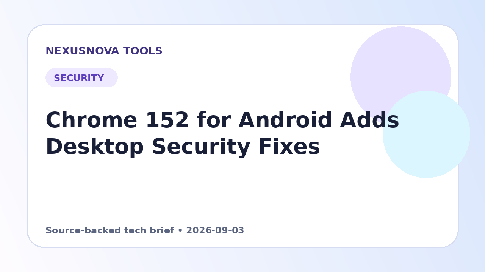

Chrome 152 for Android Adds Desktop Security Fixes
Google has announced the rollout of Chrome 152 for Android, aligning mobile security protections with desktop releases alongside overall stability improvements.
Published 2026-09-03 • NexusNova Editorial Team

Release Details and Rollout Schedule
Google has released Chrome 152, specifically build version 152.0.7977.75, for Android devices. The update is distributed through Google Play and is scheduled to reach users gradually over the coming days.
According to the official release announcement, this version includes underlying stability and performance enhancements designed to improve everyday browser behavior on mobile hardware. Comprehensive development changes remain documented within the project's official Git log.
Android security parity — Chrome 152 for Android Adds Deskto
Mobile browser updates often correspond directly to broader core security patches across all supported operating systems. For this cycle, the Android build incorporates the same security remediations deployed to desktop environments unless explicitly noted otherwise.
The corresponding desktop versions addressing these protections include builds 152.0.7977.75 and 152.0.7977.76 on Windows and macOS, as well as build 152.0.7977.75 on Linux. Maintaining version alignment across platforms helps ensure that mobile users receive consistent vulnerability protections as patches are published.
Practical Implications and User Next Steps
Because distribution happens in stages via Google Play, devices may not immediately receive the update notification on day one. Users do not need to take specialized administrative actions beyond confirming that their mobile application updates complete as the rollout progresses.
For teams managing mixed environments, tracking release versions across both desktop and mobile operating systems ensures that known security updates are uniformly applied. If unforeseen technical issues or regressions emerge after updating to build 152.0.7977.75, Google encourages users to submit problem reports directly through standard bug-filing channels.
Next steps — Chrome 152 for Android Adds Deskto
- Check Google Play on your Android device over the coming days to download Chrome version 152.0.7977.75.
- Verify that your browser application has updated to the latest build once it becomes available in your region.
- Submit a bug report through official developer channels if you encounter functional issues following the update.
Make this update useful — Chrome 152 for Android Adds Deskto
Deep-use note: The aim of this page is to make Chrome 152 for Android: Desktop Security Fixes useful as both a working tool/reference and an explanation of its limits.
What to take away from this security topic
Chrome 152 for Android: Desktop Security Fixes is most useful when the technical issue is connected to the action a person or administrator can actually take. Security problems live at boundaries: a browser receives untrusted pages, an account exposes a recovery path, and software processes data that originated somewhere else. Start by identifying that boundary, the behavior that could be abused, and the control that reduces the risk. This page should be treated as practical guidance rather than a promise that one setting, update or product label makes the whole environment safe.
Fix the documented issue without ignoring the surrounding controls
A patch, safer authentication method or configuration change addresses a particular weakness, but it does not automatically remove unrelated risks. Outdated software elsewhere, weak recovery procedures, reused credentials, excessive permissions and unsafe downloads can still matter. For Chrome 152 for Android: Desktop Security Fixes, keep the main recommendation separate from the supporting controls. This makes the advice more precise and prevents the common mistake of treating one successful check as proof that an entire account, device or browser is secure.
Verify the result instead of trusting the label
Record the version, setting or account state before making the change. Apply the smallest change that matches the documented problem, restart or reauthenticate when the platform requires it, and repeat the same test. A successful test is stronger evidence than a green badge or a reassuring message because it checks the behavior that actually mattered. Keep the baseline information so that a later regression can be recognized without guessing what changed. For Chrome 152 for Android: Desktop Security Fixes, this before-and-after discipline is part of the security work itself.
Know what not to do
Do not install an unofficial “security fixer” simply because a message sounds urgent. Do not assume private browsing repairs a browser vulnerability, and do not change several security variables at once when troubleshooting. That approach makes the cause of a problem harder to identify and can hide new failures. A better workflow for Chrome 152 for Android: Desktop Security Fixes is to make a narrow, documented change, test the expected behavior, and preserve a recovery path that does not weaken the original protection.
Operational checklist
- Identify the affected product, account or workflow.
- Use the trusted source for the relevant version or policy.
- Record the current state before editing it.
- Apply the smallest required change.
- Repeat the original test.
- Document the final state and recovery path.
This keeps Chrome 152 for Android: Desktop Security Fixes grounded in an auditable workflow rather than generic security language.
Questions to answer before you rely on the page
Before treating the information as a final answer, ask what the page actually covers, what it deliberately does not cover, and which source controls the decision when information conflicts. Check whether the input you are using matches the assumptions described here. Look for version, date, unit, format and eligibility conditions that could change the outcome. When the subject involves a third-party service, verify its current status or requirements at the source instead of assuming the interface is permanent. Keep a copy of the original input when the result matters, and preserve the source until the final output is accepted. These habits help distinguish a useful working reference from an answer that only looks complete. They also make future changes easier to trace because you know which assumption or external dependency changed. For Chrome 152 for Android: Desktop Security Fixes, the most reliable use is therefore practical and testable: understand the method, perform the task, inspect the output, and verify any consequential claim before acting on it.